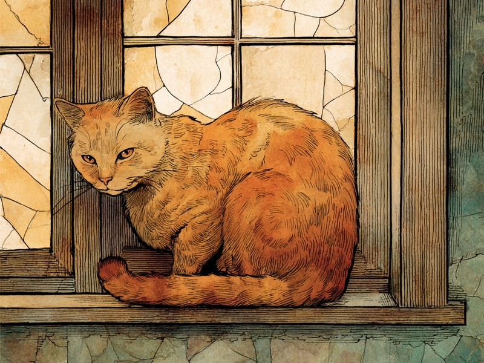
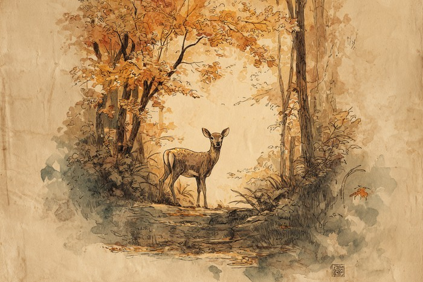

猫の恋の季節は、気温でも食べ物の量でもなく「日の長さ」で決まると言われます。猫の体は、いったいどうやって太陽の暦を読んでいるのでしょうか。 Cats don't check a calendar. They read the length of the day.
猫は日の長さで季節を測る「長日繁殖動物」
結論から言うと、猫は気温ではなく1日の明るい時間の長さを季節の目安にしていて、それが一定以上に延びると恋の季節に入るのです。こうした仲間は「長日繁殖動物」と呼ばれ、目安となるのは1日の明るい時間がおよそ14時間を超えるころ。春に日が延びていくと訪れ、暑さがやわらぐ晩夏から初秋にかけてもう一度、というように年に2〜3回ほど巡ってきます。まだ日が長い初秋も対象に入るのはこのためです。暖かく、食べ物が豊富な時期に子育ての季節を合わせるための、野生時代から受け継がれた戦略だと考えられています。
「夜の長さ」を脳に伝えるホルモン、メラトニン
日の長さを脳に伝えているのは、暗い時間帯に多く分泌されるホルモンで、その量が「夜の長さ」の指標として働いているのです。猫が日差しをカレンダーのように眺めているわけではありません。鍵を握るのは「メラトニン」というホルモンです。明るい時間帯には分泌が抑えられるという性質があるため、体内のメラトニンの量を見れば「夜がどれくらい長いか」が分かるというわけです。この情報が脳に届くことで、体は「日が長くなってきた、暖かい季節が近い」と判断し、恋の季節への準備を整えていくのです。目に見えない光の変化を、ホルモンの量という形に翻訳して読み取っている、と言えるでしょう。獣医繁殖学の専門誌『Journal of Feline Medicine and Surgery』に掲載された総説でも、猫は体内のメラトニンが発情周期を調整する「長日繁殖動物」であると報告されています(Kutzler, 2015)。
出典: Kutzler, M.A. "Alternative methods for feline fertility control: Use of melatonin to suppress reproduction" Journal of Feline Medicine and Surgery, 2015. journals.sagepub.com
日が短くなると恋をする「短日繁殖動物」もいる
答えは妊娠期間の長さにあり、妊娠期間が長い動物は春の出産に間に合わせるため、日が短くなる秋を恋の季節の合図にしているのです。猫とは正反対の動物もいます。エゾシカやヤギ、ヒツジなどは、日が短くなっていく秋に恋の季節を迎える「短日繁殖動物」です。このうちエゾシカは妊娠期間がおよそ210〜230日(7か月前後)と長いため、秋に始めることでちょうど春の出産に間に合う、という計算になっています。「暖かい季節に子を迎える」というゴールは猫と同じでも、逆算して選ぶスタートの合図が変わるというわけです。日が延びれば動き出す猫と、日が縮めば動き出すシカ。同じ太陽の光を、まったく逆向きに読んでいるのですね。

犬は猫と違って季節繁殖動物ではなく、日の長さにかかわらず、およそ半年に1回のペースで恋の季節を迎えます。同じ家で暮らしていても、猫は「太陽の暦」、犬は「体内の暦」と、使っているカレンダーが違うのです。